概要
音响系统
可使用下列音响系统：
| 音响系统 | 音响主机 | 扬声器 | 导航 ECU |
|---|---|---|---|
|
○：可用 -：不可用 *：对于导航系统，通过安装导航 ECU 提高的导航系统功能可用。 |
|||
| 多媒体系统 | 收音机和显示屏接收器总成 | 8 个扬声器 | - |
| 导航系统 | 14 个扬声器 | ○* | |
音响主机
考虑到与仪表板的整体性，配备了具有独特尺寸的音响主机。
收音机和显示屏总成的多功能显示屏采用了薄膜晶体管液晶显示屏 (TFT LCD)。多功能显示屏显示音响画面、蓝牙免提画面、车辆信息画面等，并可使用触摸操作、滑动操作* 或拖动操作* 进行操作。
*：滑动操作或拖动操作并不是在所有画面上都可用。
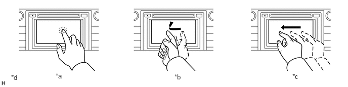
| *a | 触摸操作 | *b | 滑动操作 |
| *c | 拖动操作 | *d | 所示插图仅为示例。图示可能与实际的音响主机有所不同。 |
可在音源选择画面上切换音源。可根据使用频率改变音源画面上显示的音源布局。
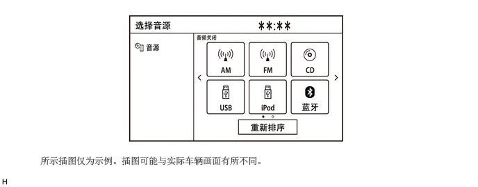
配备有 MirrorLink 功能。用户使用 USB 通信线或 Wi-Fi 通信将智能手机连接至系统，便可通过该功能使用多功能显示屏操作智能手机。（带 MirrorLink 功能的车型）
配备 Miracast 功能。该功能可使 Wi-Fi 连接的智能手机的画面显示在多功能显示屏上。（带 Miracast 功能的车型）
抬头显示装置上可显示当前选择的音源状态。（带抬头显示装置的车型）
出于环保考虑，提供有油耗画面。
主画面
主画面可以显示多条信息画面。
画面最多可以分为 4 个显示区域，同时在各个所需区域显示音响画面、免提画面、车辆信息画面等。
显示的项目可以定制，通过选择相应的信息画面可显示各功能的顶部画面。
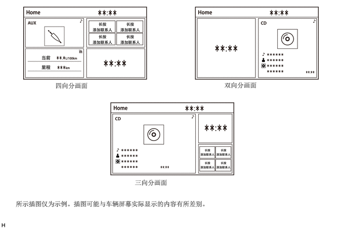
USB 接口
采用了 USB 接口，进而可操作 USB 存储设备、便携式音频播放机（USB 型）、iPhone、iPod classic、iPod、iPod nano 或 iPod touch。
USB 音频系统支持高分辨率音源并可以播放 USB 设备上的高分辨率音源。（高分辨率音源比音乐 CD 具有更高的比特率，能够使音质接近原始录音的音质。高分辨率的定义由诸如 CTA（消费者技术协会）等标准化组织制定。）
USB 系统可回放存储在 USB 存储设备中的视频数据。
通过将 USB 集线器插入 USB 端口，一次最多可使用下列 2 项：USB 存储设备、便携式音频播放机（USB 型）或苹果公司产品。
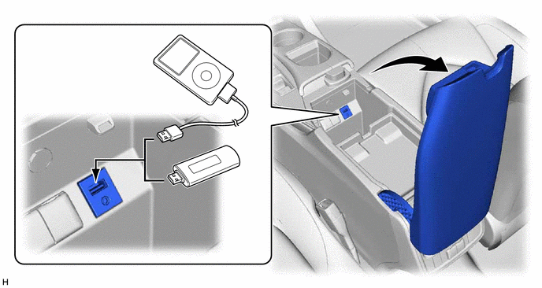
即使使用 USB 集线器连接 3 个或更多 USB 设备，仅可识别连接的前 2 个 USB 设备。
iPhone、iPod nano 和 iPod touch 为苹果公司在美国和其他国家注册的商标。
该系统可使用以下 iPhone、iPod nano 和 iPod touch 设备。
适用于
iPhone SE
iPhone 6s Plus
iPhone 6s
iPhone 6 Plus
iPhone 6
iPhone 5s
iPhone 5c
iPhone 5
iPhone 4S
iPod touch（第六代）
iPod touch（第五代）
iPod nano（第七代）
由于型号、软件版本等之间的差异，某些车型可能与该系统不兼容。
支持符合以下规格的 USB 存储设备：
| USB 通信格式 | USB 2.0，高速 (480 Mbps) |
| 文件系统 | FAT 16/32 |
| 通信等级 | 大容量存储 |
| 文件格式 | MP3/WMA/AAC |
| 高分辨率音源文件格式 | WAV (LPCM)/FLAC/ALAC/OGG Vorbis |
支持符合下列规格的视频数据：
| 文件格式 | MPEG-4/AVI Container/Windows Media Video/RealMedia |
| 相应的画面尺寸 | MAX 1920 x 1080 |
| 相应帧速率 | MAX 60i / 30p |
蓝牙音响系统
蓝牙音响系统可利用蓝牙通信使用户通过车辆扬声器欣赏存储在便携式音频播放机上的音乐。
操作所需的蓝牙规格和模式如下表所示：
| 规格/模式 | 版本 | ||
|---|---|---|---|
| 必需 | 推荐 | ||
| 蓝牙规格 | 版本 2.0 | 版本 4.1 + EDR | |
| 模式 | 高级音频传输模式 (A2DP) | 版本 1.0 | 版本 1.3 |
| 音频/视频远程控制模式 (AVRCP) | 版本 1.0 | 版本 1.6 | |
注册多个蓝牙兼容设备时，用户可以为蓝牙音频系统和蓝牙免提系统选择不同的设备。
蓝牙设备的连接记录存储在音频主机的内部存储器中。存储的数据可以导出至 USB 存储设备作为连接记录文件，可以使用 GTS 对其进行检查。
蓝牙免提系统
系统与蓝牙兼容蜂窝电话连接时，蓝牙免提系统可使用户接打电话时不用将手离开方向盘。
操作所需的蓝牙规格和模式如下表所示：
| 规格/模式 | 版本 | ||
|---|---|---|---|
| 必需 | 推荐 | ||
|
*：带导航系统的车型 |
|||
| 蓝牙规格 | 版本 2.0 | 版本 4.1 + EDR | |
| 模式 | 免提模式 (HFP) | 版本 1.0 | 版本 1.7 |
| 对象推送模式 (OPP) | 版本 1.1 | 版本 1.2 | |
| 电话簿数据存取模式 (PBAP) | 版本 1.0 | 版本 1.2 | |
| 拨号网络模式 (DUN)* | - | 版本 1.2 | |
| 串行接口模式 (SPP)* | - | 版本 1.2 | |
蓝牙免提系统的中断呼叫功能的操作可能随使用的蓝牙电话或电话公司的不同而有所差异。
| Bluetooth 单词标识和标志是蓝牙技术联盟公司所有的注册商标。 |
根据配备的音响主机，系统可能不支持上述某些模式。
如果连接的蓝牙电话的规格低于推荐规格或不支持所需功能，则可用功能会受到限制。
如果蓝牙兼容的蜂窝电话不支持免提模式 (HFP)，则蜂窝电话不能注册或如对象推送模式 (OPP) 或电话簿数据存取模式 (PBAP) 的数据传输不可用。
注册多个蓝牙兼容设备时，用户可以为蓝牙音频系统和蓝牙免提系统选择不同的设备。
蓝牙设备的连接记录存储在音频主机的内部存储器中。存储的数据可以导出至 USB 存储设备作为连接记录文件，可以使用 GTS 对其进行检查。
时钟和状态显示
采用可以检查显示状态栏（时钟、蓝牙设备等的连接状态）的区域。
用户使用状态栏显示可以检查当前时间、蓝牙连接状态、信号强度、蜂窝电话的剩余电池电量等。
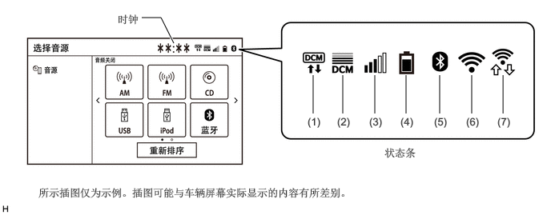
| 项目 | 概要 | ||
|---|---|---|---|
|
*1：带导航系统的车型 *2：状态条一次最多只可显示 5 种状态。如果要显示的状态图标超过 5 个，则状态图标会根据使用情况进行必要的显示。 *3：根据蜂窝电话的蓝牙规格和模式，可能不显示。 |
|||
| 时钟 | 显示手动或通过 GPS 信号联动功能调节的时间。 | ||
| 状态条*2 | (1) | G-BOOK 网络通信设备*1 | 显示与 G-BOOK 网络通信的通信设备。 |
| (2) | 车载通信收发器（数据通信模块）信号强度*1 | 显示车载通信收发器（数据通信模块）的信号强度。 | |
| (3) | 蜂窝电话信号强度*3 | 显示连接蓝牙的蜂窝电话的信号强度。 | |
| (4) | 蜂窝电话电池电量*3 | 显示连接蓝牙的蜂窝电话的电池电量。 | |
| (5) | 蓝牙连接状态 | 显示音响主机和蜂窝电话之间的蓝牙连接状态。 | |
| (6) | Wi-Fi 连接状态 | 显示音响主机和网络共享兼容蜂窝电话或移动 Wi-Fi 路由器之间的 Wi-Fi 连接状态。 | |
| (7) | Wi-Fi P2P 模式状态 | 使用 Wi-Fi P2P 模式（Miracast 或 MirrorLink*3）时，显示音频主机和智能电话之间的 Wi-Fi 连接状态。 | |
Wi-Fi 通信
收音机和显示屏接收器总成内集成有无线 LAN 天线，从而可实现与无线客户端的 Wi-Fi 通信（用户网络共享兼容蜂窝电话或移动 Wi-Fi 路由器）。
由于车辆状况、周围环境（例如收音机和显示屏接收器总成周围的无线电波情况）、距设备的距离或设备状况，Wi-Fi 通信可能不可用。此外，Wi-Fi 通信期间，通信可能因上述情况中断或不稳定。
音频主机和无线客户端的连接记录存储在音频主机的内部存储器内。存储的数据可以导出至 USB 存储设备作为连接记录文件，可以使用 GTS 对其进行检查。
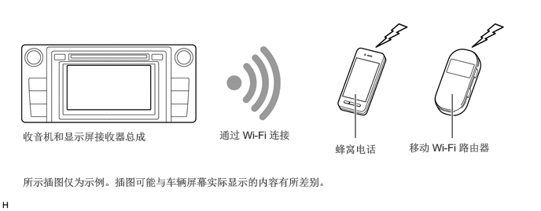
语音识别系统
按下方向盘装饰盖上的语音开关时，语音识别系统启动且语音识别菜单画面显示在多功能显示屏上。
显示可通过语音识别操作的系统和指令以辅助不熟悉语音识别系统的用户。此外，配备指示灯，可显示语音识别状态，如通话时间或语音识别结果。
通过从菜单画面中选择系统并根据示例指令进行通话，用户可用最简洁的语音操作系统。
通过选择菜单画面底部的“更多提示”可以显示示例指令。
带可将文本转化为语音的字音转换 (G2P) 功能，存储在 USB 存储器设备、苹果产品等的音频文件可以通过讲出艺术家姓名、专辑名称、标题、播放列表名称等来使用语音识别功能进行搜索。
即使指令了当前画面上未显示的指令，系统也可根据用户指令进行操作。
仅当选择简体中文作为显示语言时语音识别系统才可用。选择英文或繁体中文时，语音识别系统不可用。
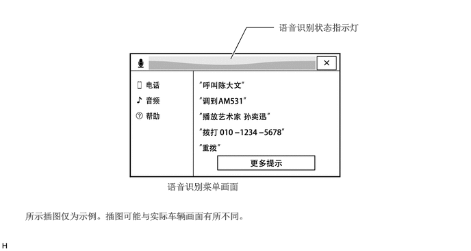
手写输入功能
在 iPod 或 USB 存储器中搜索音频曲目或编辑蓝牙免提系统联系人列表等时，除了键盘输入法，也支持手写输入法。可通过用手指在多功能显示屏的输入区域写入字符来输入字符。此外，该方法具有文字预测功能，用户开始在输入区域书写文字时可预测并显示可能匹配的文字。
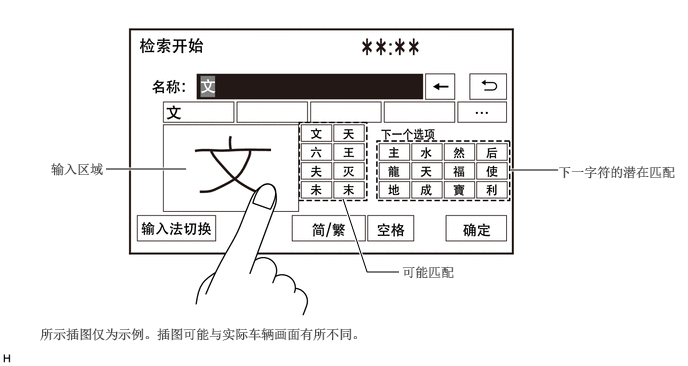
移动助手
iOS 智能手机或 Android 智能手机通过蓝牙通信连接时，辅助语音输入的移动辅助功能可用。
通过按住方向盘装饰盖上的电话开关，多功能显示屏上显示移动辅助画面且用户无需分散注意的情况下可以提问问题。为了将分散注意力最小化，iOS 智能手机或 Android 智能手机画面将不亮起。
移动辅助特性，用户可以让移动辅助呼叫联系人、选择并播放音乐、听并组合文本信息、使用地图并得到方向、阅读通知、找到日历信息、添加提醒等更多。
系统对检索结果画面和合成语音做出响应。
使用移动辅助功能呼叫联系人或收听用户智能手机上存储的音乐时，系统将自动切换至电话拨打或音响画面。
可用特性和功能可能根据连接智能手机所安装的 iOS/Android 版本不同而有所差异。
电话激活时，无法使用移动辅助功能。
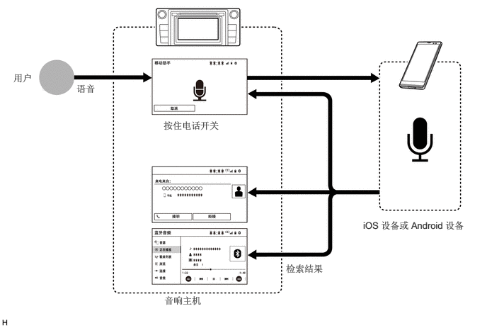
App Suite 服务（带 App Suite 服务的车型）
有关详情（操作、设置等），请参考 www.toyota-connect.com/TSL/。
自动调节音响平衡装置 (ASL)
自动调节音响平衡装置 (ASL) 功能自动调节音响系统音量以补偿增大的车辆噪音（车辆噪音随车速的升高逐渐增大）。
从组合仪表总成接收车速信号并用于 ASL 控制。
多信息显示屏
可在组合仪表总成的多信息显示屏上显示音源模式、电台、音频曲目等。
通过操作组合仪表总成上的多信息显示屏可进行音源模式切换、电台或音频曲目选择等操作。
蓝牙兼容蜂窝电话连接至系统，记录或收藏列在多信息显示屏且用户可以呼叫列表里的联系人。
通过蓝牙通信连接至系统的蜂窝电话接听电话时，组合仪表总成内的多信息显示屏显示电话信息。显示电话信息时操作多信息显示屏可使用户接听电话。
按下方向盘装饰盖上的语音开关时，语音识别画面显示在多信息显示屏上作为中断显示且语音识别模式状态用扩音器图标和信息显示。
D 级扩音器（带导航系统的车型）
放大器根据接收到的音频信号以最有效的方式控制供应至放大器电路的电源。
D 等级放大器功耗低，产生热量少，缩小了散热片和相关部件的尺寸。从而实现了紧凑、轻量化的放大器。
Clari-Fi 音乐恢复技术（带导航系统的车型）
放大器使用 Clari-Fi 技术。
MP3 或 AAC 等文件在文件压缩过程中丢失了原创音乐源的音频详情。Clari-Fi 技术用于恢复丢失的音频详情并优化数据。
播放压缩的音乐文件过程中，Clari-Fi 技术改善了实时音乐文件的频率特性、动态范围、低频声等，从而重现原创音乐源的宽广音域。
方向盘装饰盖开关
为方便起见，驾驶员常用的开关安装在方向盘上。
后排座椅音频控制面板（冷却器控制开关总成）（带冷却器控制开关总成的车型）
后排座椅中央扶手总成配备有控制器，可使后排座椅乘员调节音量和改变音源。
规格
音响系统
| 音响主机 | 设计 | 规格 |
|---|---|---|
| 收音机和显示屏接收器总成 | 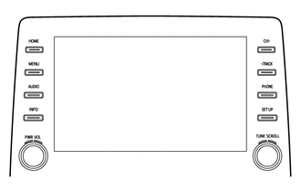 |
多媒体系统：
·
9 英寸宽屏液晶显示屏（WVGA 型） ·
支持的显示语言：英语、简体中文和繁体中文 ·
AM/FM 调谐器 ·
自动调节音响平衡装置 (ASL) ·
语音识别系统 ·
蓝牙音响系统 ·
蓝牙免提系统 ·
便携式音频播放机（USB 型）接口 ·
iPod/iPhone 接口 ·
USB 存储设备接口 ·
高分辨率音源兼容（USB 音频系统） ·
语音识别搜索（USB 音响系统） ·
移动助手 ·
MirrorLink 功能 ·
Miracast 功能 ·
USB 视频 ·
立体声插座适配器 ·
Wi-Fi 通信功能 ·
可更改定制的车辆设定 ·
8 扬声器系统 ·
主机：先锋 |
| 收音机和显示屏接收器总成 | 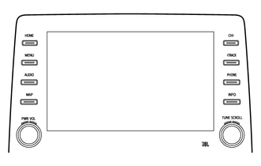 |
导航系统：
·
9 英寸宽屏液晶显示屏（WVGA 型） ·
支持的显示语言：英语、简体中文和繁体中文 ·
AM/FM 调谐器 ·
中国实时交通信息 (RTIC) ·
自动调节音响平衡装置 (ASL) ·
Clari-Fi 音效恢复技术 ·
语音识别系统 ·
蓝牙音响系统 ·
蓝牙免提系统 ·
便携式音频播放机（USB 型）接口 ·
iPod/iPhone 接口 ·
USB 存储设备接口 ·
高分辨率音源兼容（USB 音频系统） ·
语音识别搜索（USB 音响系统） ·
移动助手 ·
MirrorLink 功能 ·
Miracast 功能 ·
USB 视频 ·
立体声插座适配器 ·
Wi-Fi 通信功能 ·
可更改定制的车辆设定 ·
14 扬声器系统 ·
主机：先锋 ·
立体声放大器：JBL |
8 扬声器系统
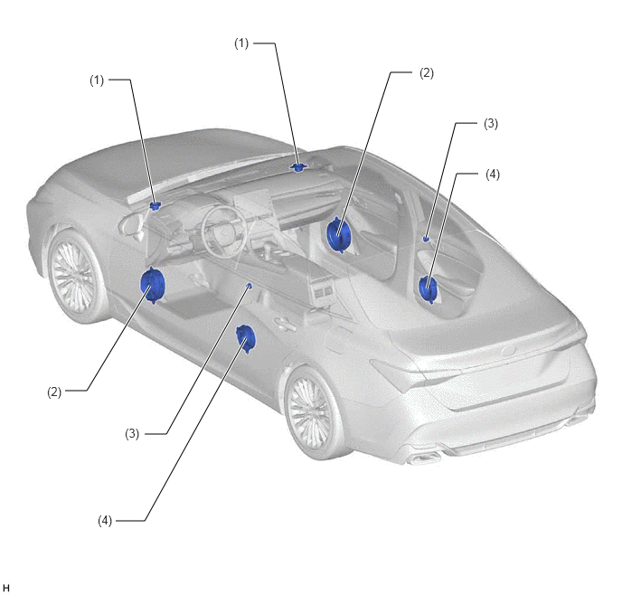
| 位置 | 扬声器名称 | 数量 | 尺寸 | 阻抗 | 额定输入功率 |
|---|---|---|---|---|---|
| (1) | 前 2 号扬声器总成 | 2 | 6.5 cm (2.6 in.) | 4 Ω | 20 W |
| (2) | 前 1 号扬声器总成 | 2 | 20.7 x 24.5 cm (8 x 9 in.) | 4 Ω | 20 W |
| (3) | 后 2 号扬声器总成 | 2 | 3.7 cm (1.5 in.) | 4 Ω | 20 W |
| (4) | 后扬声器总成 | 2 | 16 cm (6.3 in.) | 4 Ω | 20 W |
14 扬声器系统
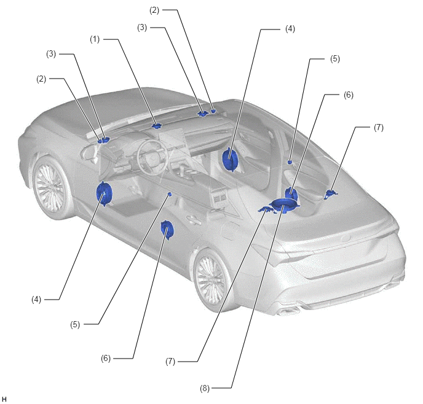
| 位置 | 扬声器名称 | 数量 | 尺寸 | 阻抗 | 额定输入功率 |
|---|---|---|---|---|---|
| (1) | 前 4 号扬声器总成 | 1 | 8 cm (3.1 in.) | 2.8 至 3.8 Ω | 4 W |
| (2) | 前 3 号扬声器总成 | 2 | 2.5 cm (1.0 in.) | 额定 4 Ω | 1 W |
| (3) | 前 2 号扬声器总成 | 2 | 8 cm (3.1 in.) | 2.8 至 3.8 Ω | 4 W |
| (4) | 前 1 号扬声器总成 | 2 | 20.7 x 24.5 cm (8 x 9 in.) | 4.5 至 6.7 Ω
（额定 6 Ω） |
4 W |
| (5) | 后 2 号扬声器总成 | 2 | 2.5 cm (1.0 in.) | 额定 4 Ω | 1 W |
| (6) | 后扬声器总成 | 2 | 15 cm (6.0 in.) | 6.2 至 9.4 Ω
（额定 8 Ω） |
8.4 W |
| (7) | 带支架的扬声器总成 | 2 | 8 cm (3.1 in.) | 2.8 至 3.8 Ω | 4 W |
| (8) | 后 3 号扬声器总成 | 1 | 26.5 cm (10.5 in.) | 4.2 至 6.4 Ω
（额定 6 Ω） |
2 W |
方向盘装饰盖开关总成
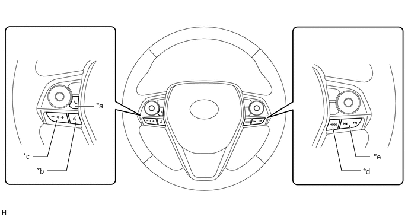
| *a | 电话开关 | *b | 语音开关 |
| *c | 音量 +/- 开关 | *d | MODE 开关 |
| *e | 上/下搜索开关 | - | - |
后座椅音响控制面板（冷却器控制开关总成）
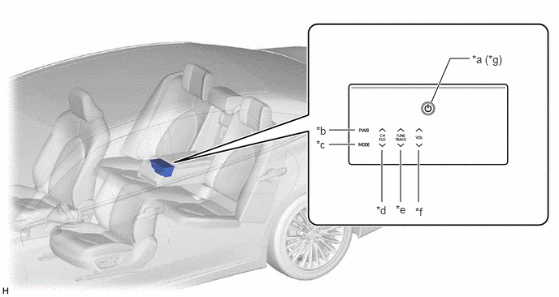
| *a | Home 开关 | *b | 电源开关 |
| *c | MODE 开关 | *d | 频道上/下调节开关 |
| *e | 调谐上/下调节开关 | *f | 音量升/降调节开关 |
| *g | 通过打开 Home 开关，可操作冷却器控制开关总成的各个开关。 | - | - |
主要特征
MirrorLink*1 功能
要使用 MirrorLink 功能，需要使用 USB 通信线或 Wi-Fi （P2P 模式）*5*6*7 将兼容的智能手机*2*3*4 连接至收音机和显示屏接收器总成。
建立连接后，智能手机的屏幕会显示在多功能显示屏上。利用该屏幕，用户可操作智能手机上安装的应用程序，并可通过车辆扬声器收听智能手机中的音频。
*1：MirrorLink 是车联网联盟公司的注册商标。
*2：如果连接的设备与 MirrorLink 不兼容，则 MirrorLink 功能不可用。
*3：通过 CCC（汽车连接联盟） MirrorLink 1.1 或更高版本（包括 MirrorLink 1.2）认证项目的智能手机。有关详情，请参考 http://carconnectivity.org/ 和 http://www.mirrorlink.com/。
*4：与移动智能手机制造商确认 MirrorLink 兼容性。各智能手机机型的确认方法和公布的计划不同。
*5：Wi-Fi（P2P 模式）使用与蓝牙相同的 2.4 GHz 无线电频段执行无线通信。根据使用环境，可能发生无线电波干扰，导致图像失真和音频卡滞。
*6：Wi-Fi 通信设定至ON，Wi-Fi 通信和 Wi-Fi（P2P 模式）互相干扰导致图像变形且音频卡滞。
*7：通过 Wi-Fi（P2P 模式）使用 MirrorLink 功能时，Miracast 功能无法使用。
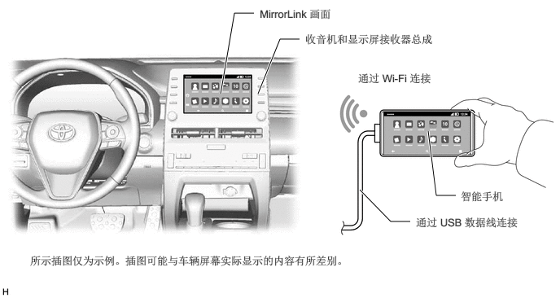
Miracast 功能
使用 Miracast 功能*1*2*3 前，需要将 Miracast 兼容智能手机通过带 Wi-Fi （P2P 模式）*5.*6*7的 Wi-Fi Direct*4 连接至收音机和显示屏接收器总成。
建立连接后，智能手机的屏幕会显示在多功能显示屏上。使用智能手机，用户可以操作多功能显示屏。如果智能手机的画面为竖屏，则其在多功能显示屏上也将垂直显示。
使用 Miracast 功能时，在多功能显示屏上显示智能手机上播放的视频并通过车辆扬声器播放音频。车辆行驶时，将不显示视频但音频将从车辆扬声器继续播放。
*1：Miracast 功能是最优型的功能。
*2: Miracast、Wi-Fi Direct 和 Wi-Fi 为 Wi-Fi 联盟的注册商标。
*3：由 Wi-Fi 联盟推荐的 Android OS 版本 4.4 或更高版本的设备认证的 Miracast 兼容性以使用此功能。与移动智能手机制造商确认 Miracast 兼容性。
*4：Wi-Fi Direct 是使可兼容设备连接并与另一个设备直接通信的 P2P 连接方法。
*5：Wi-Fi（P2P 模式）使用与蓝牙相同的 2.4 GHz 无线电频段执行无线通信。根据使用环境，可能发生无线电波干扰，导致图像失真和音频卡滞。
*6：Wi-Fi 通信设定至ON，Wi-Fi 通信和 Wi-Fi（P2P 模式）互相干扰导致图像变形且音频卡滞。
*7：音频主机和无线客户端的连接记录存储在音频主机的内部存储器内。存储的数据可以导出至 USB 存储设备作为连接记录文件，可以使用 Global TechStream (GTS) 对其进行检查。
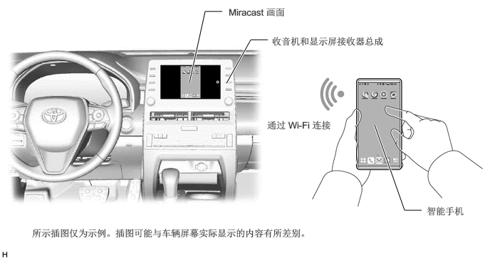
油耗画面
燃油消耗画面显示每分钟或每个行程的油耗信息或历史记录、可行驶距离等。该画面具有以下所列的显示功能。
画面上显示的信息可能稍微与实际有所不同。
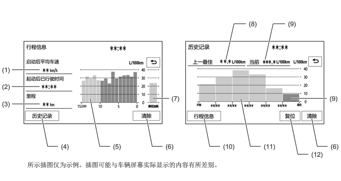
| 项目 | 概要 | |
|---|---|---|
| (1) | 起动后的平均速度 | 显示由组合仪表总成根据自点火开关置于 ON 位置后的行驶距离和经过的时间计算得出的平均车速值。 |
| (2) | 起动后经过的时间 | 显示由组合仪表总成根据自点火开关置于 ON 位置后经过的时间计算得出的经过的时间值。 |
| (3) | 可行驶里程 | 显示可行驶的大致距离。 |
| (4) | 历史记录开关 | 切换画面至历史记录（每个行程的油耗）画面。 |
| (5) | 分钟平均油耗 | ·
显示点火开关置于 ON 位置后，由组合仪表总成根据行驶距离和耗油量（燃油喷射信号）计算得出的值。 ·
显示前一分钟或自上次选择删除以来的平均油耗。 |
| (6) | 清除开关 | 清除以前所有信息。 |
| (7) | 当前油耗 | 显示点火开关置于 ON 位置后，根据行驶距离和耗油量（燃油喷射信号）计算得出的瞬时（当前）油耗值。 |
| (8) | 上一最佳值 | 显示最佳（最经济）短程油耗。 |
| (9) | 最新值 | 显示此行程的平均油耗。 |
| (10) | 行程信息开关 | 将画面切换至行程信息（每分钟平均油耗）画面。 |
| (11) | 短程平均油耗 | ·
显示当前记录和最近 5 次短程平均油耗记录或当前记录和上次选择清除后的记录。 ·
重置组合仪表总成上显示的平均油耗后，开始计算平均油耗。 |
| (12) | 复位开关 | ·
重新开始计算平均油耗值。 ·
将平均油耗重置信号发送至组合仪表总成以更新图表。 |
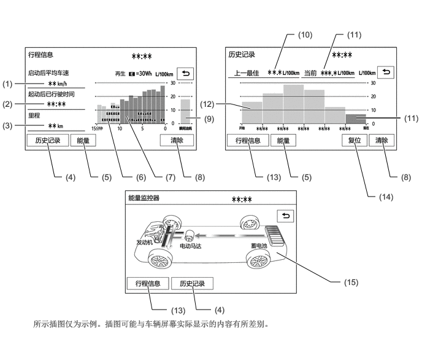
| 项目 | 概要 | |
|---|---|---|
| (1) | 起动后的平均速度 | 显示由组合仪表总成根据自电源开关置于 ON 位置后的行驶距离和经过的时间计算得出的平均车速值。 |
| (2) | 起动后经过的时间 | 显示由组合仪表总成根据自电源开关置于 ON 位置后经过的时间计算得出的经过的时间值。 |
| (3) | 可行驶里程 | 显示可行驶的大致距离。 |
| (4) | 历史记录开关 | 切换画面至历史记录（每个行程的油耗）画面。 |
| (5) | 能量开关 | 切换至能量监视器画面。 |
| (6) | 回收能量 | ·
用“E”标记指示回收能量 1 分钟。 ·
混合动力车辆控制 ECU 总成计算回收能量状态。 |
| (7) | 分钟平均油耗 | ·
显示电源开关置于 ON 位置后，根据行驶距离和耗油量（燃油喷射信号）计算得出的值。 ·
显示前一分钟或自上次选择删除以来的平均油耗。 |
| (8) | 清除开关 | 清除以前所有信息。 |
| (9) | 当前油耗 | 显示点电源关置于 ON 位置后，由组合仪表总成根据行驶距离和耗油量（燃油喷射信号）计算得出的瞬时（当前）油耗值。 |
| (10) | 上一最佳值 | 显示最佳（最经济）短程油耗。 |
| (11) | 最新值 | 显示此行程的平均油耗。 |
| (12) | 短程平均油耗 | ·
显示当前记录和最近 5 次短程平均油耗记录或当前记录和上次选择清除后的记录。 ·
重置组合仪表总成上显示的平均油耗后，开始计算平均油耗。 |
| (13) | 行程信息开关 | 将画面切换至行程信息（每分钟平均油耗）画面。 |
| (14) | 复位开关 | ·
重新开始计算平均油耗值。 ·
将平均油耗重置信号发送至组合仪表总成以更新图表。 |
| (15) | 能量监视器 | 指示能量传递方向，以确定当前驱动方法（发动机、电动机或两者），发动机产生能量的状态和使用可再生能源的状态。
·
可在仪表上检查蓄电池的充电状态（SOC）。仪表上以 8 个级别显示充电状态。 ·
显示混合动力车辆控制 ECU 总成计算的能量监视器状态。 |